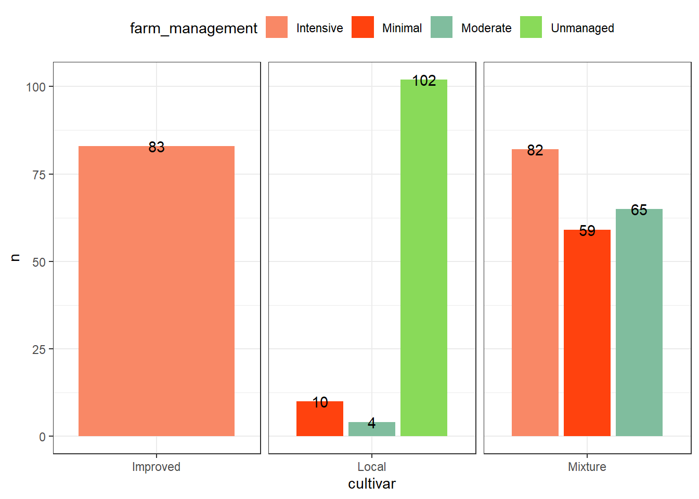
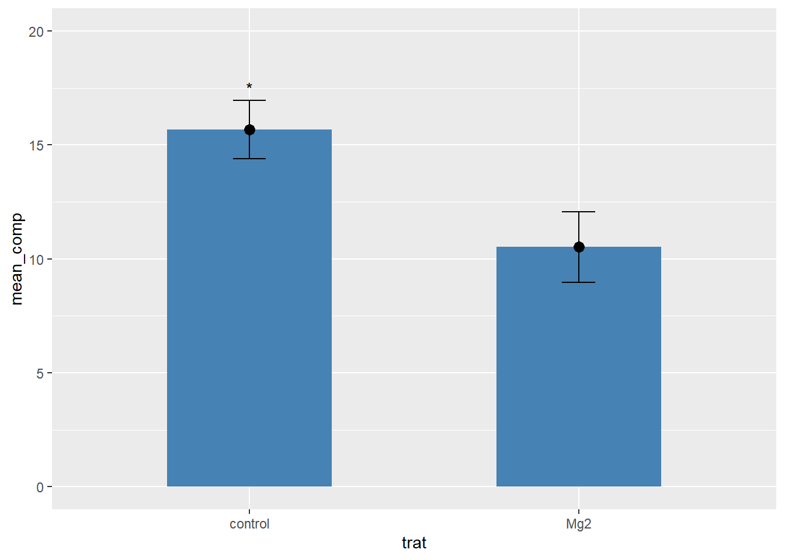

Visualizando o conjunto de dados, pode-se perceber que eles estão no formato largo. Para que seja possível realizar uma análise exploratória desses dados, é necessário usar a função pivot_longer()do tidyverse para tranformar a tabela no formato longo.
Para montagem dos gráficos, a tabela de dados deve estar no formato longo.
Trabalhando com gráfico de linha
Por ser um conjunto de dados com uma resposta numérica contínua em um fator temporal, esses dados foram transformados em um gráfico de linhas usando o geom_point()e o geom_line().
Para atribuir um nome para cada linha formada, foi usada a função annotate().
Usando os mesmos dados do conjunto de dados 2, foi criado uma tabela de contingência sobre o número de fazendas com incidência de ferrugem do café por região e por zona. Para isso, a função count() é usada para contar quantas ocorrências têm de determinadas variáveis.
# A tibble: 9 × 3
region zone n
<chr> <chr> <int>
1 Oromia Bale 30
2 Oromia Ilu AbaBora 45
3 Oromia Jimma 45
4 Oromia West Wellega 45
5 SNNPR Bench Maji 45
6 SNNPR Gedio 45
7 SNNPR Keffa 45
8 SNNPR Sheka 45
9 SNNPR Sidama 60
A função count() fornece uma tabela de formato longo. Caso seja necessário uma tabela de contingência de formato largo, pode ser usado a função tabyl() do pacote janitor.
Usando a função tabyl() foi criado a tabela de contingência em relação a região por zona; zona por região; e cultivar por região
library(janitor)cr |>tabyl(region, zone) #Formato largo
region Bale Bench Maji Gedio Ilu AbaBora Jimma Keffa Sheka Sidama West Wellega
Oromia 30 0 0 45 45 0 0 0 45
SNNPR 0 45 45 0 0 45 45 60 0
cr |>tabyl(zone, region)
zone Oromia SNNPR
Bale 30 0
Bench Maji 0 45
Gedio 0 45
Ilu AbaBora 45 0
Jimma 45 0
Keffa 0 45
Sheka 0 45
Sidama 0 60
West Wellega 45 0
Foi realizado também a contagem das formas de manejo das fazendas em função das cultivares.
cr |>count(farm_management, cultivar)
# A tibble: 7 × 3
farm_management cultivar n
<chr> <chr> <int>
1 Intensive Improved 83
2 Intensive Mixture 82
3 Minimal Local 10
4 Minimal Mixture 59
5 Moderate Local 4
6 Moderate Mixture 65
7 Unmanaged Local 102
Trabalhando com gráfico de colunas
Sobre a contagem das formas de manejo das fazendas em função das cultivares, foi criado um gráfico de colunas usando a função geom_col(). O gráfico de colunas é bastante usado para representar valores numéricos associados a categorias.
Junto ao gráfico, foi usado a função facet_wrap() para dividir os gráficos em função das cultivares.
library(ggthemes)cr |>count(farm_management, cultivar) |>ggplot(aes(cultivar, n, fill = farm_management, label = n))+geom_col(position ="dodge2")+scale_fill_canva()+theme_bw()+theme(strip.text.x =element_blank(),legend.position ="top")+geom_text(position =position_dodge(width =0.9))+facet_wrap(~cultivar, scales ="free_x")

Conjunto de dados 5
Dessa vez foi utilizado os mesmos dados do conjunto de dados 1, sobre o comprimento de plantas em função da aplicação e não aplicação de Mg2.
# A tibble: 20 × 3
trat rep comp
<chr> <dbl> <dbl>
1 Mg2 1 9
2 Mg2 2 12.5
3 Mg2 3 10
4 Mg2 4 8
5 Mg2 5 13.2
6 Mg2 6 11
7 Mg2 7 10.8
8 Mg2 8 9.5
9 Mg2 9 10.8
10 Mg2 10 10.4
11 control 1 13.7
12 control 2 15.9
13 control 3 15.7
14 control 4 14.2
15 control 5 15.9
16 control 6 16.5
17 control 7 18
18 control 8 14.4
19 control 9 16.4
20 control 10 16
Trabalhando com gráfico errorbar
Como o conjunto de dados envolve um número grande de repetições, torna-se interessante realizar um gráfico de errorbar para demonstrar a faixa de variabilidade entre os valores.
Para usar o geom_errobar(), é preciso primeiramente encontrar a média e o desvio padrão dos dados. Para isso pode ser utilizado a funçãogroup_by()para especificar otrate a funçãosummarize()para encontrar a média e desvio padrão. Tendo essas informações, pode-se criar um gráfico de barras com o error bar, usando ogeom_col()e ogeom_errobar().
mg |>group_by(trat) |>summarise(mean_comp =mean(comp),sd_comp =sd(comp)) |>ggplot(aes(trat, mean_comp))+geom_col(fill ="steelblue", width =0.5)+geom_point(size =3)+ylim(0, 20)+geom_errorbar(aes(ymin = mean_comp - sd_comp,ymax = mean_comp + sd_comp),width =0.1)+annotate(geom ="text", #Pode ser usado para mostrar que é estatisticamente diferentex =1,y =17.5,label ="*")

Conjunto de dados 6
Esse conjunto de dados contem as notas das provas (sabatinas) aplicadas em aula durante a disciplina FIP 606. Os dados foram importados do Google Sheet usando o pacote gsheete a função gsheet2tbl().
Para observar a quantidade e a frequência de nota de cada prova, foi separado os dados da prova 1 com os dados da prova 2, usando a função select() selecionando apenas as colunas prova e nota, e a função filter() separando a prova 1 da prova 2. Desse modo foi criado 2 subconjuntos de dados.
# A tibble: 6 × 2
nota n
<dbl> <int>
1 43.8 3
2 56.2 1
3 68.8 5
4 81.2 2
5 87.5 4
6 100 7
Sumário e Histograma
Para observar os dados sumarizados foi usado a função group_by() para agrupar os dados gerais em 2 grupos (prova 1 e prova 2), e depois foi usado a função summarise() para encontrar média, desvio padrão e mediana por prova, usando os argumentos mean(), sd() e median(), respectivamente.
Para a análise exploratória, foi realizado um histograma para cada prova, usando a função geom_histogram() para os subconjuntos criados. O histograma foi utilizado para demonstrar a distribuição de frequências. Após formados, os histogramas foram juntados em uma mesma imagem usando o pacote patchwork(). No histograma, para delimitar o número de colunas que aparecem no gráfico, foi usado o argumento bins = 5, e foi criado uma linha que marca a média dos dados usando a função geom_vline(). Para que os dois gráficos ficassem com o eixo Y padronizado, foi colocado ylim(0,10).
Através da sumarização, pode-se observar que os valores médios das notas das duas provas são bem próximos, sendo 79.54 na prova 1 e 79.26 na prova 2. Pelo histograma também pode-se observar que na prova 1 a frequência de notas superiores a 90 foi maior do que o observado na prova 2, enquanto que na prova 2 a frequência de notas inferiores a 50 foi maior do que na prova 1.
Trabalhando com Boxplot
Uma outra análise exploratória que pode ser realizado é o boxplot, usando a função geom_boxplot(). Para que o gráfico considere as duas provas como diferentes, foi usado o factor() para que cada prova seja considerada como fator. Também foram adicionados os pontos usando geom_jitter(), que representa as notas tiradas em cada prova.
No boxplot pode-se observar que embora a prova 1 apresente a mediana um pouco maior que a prova 2, 50% das notas na prova 2 se encontram concentrados acima da nota 70, enquanto que 50% das notas na prova 1 se concentram abaixo da nota 100, mais ou menos entre 65 e 98.
Trabalhando com gráfico de errobar
Por último, também foi construído um gráfico de errobar usando as funções geom_point() e geom_errobar(). No qual o ponto médio representa a média de notas em cada prova e o errobar corresponde ao intervalo de confiança. Também foi definido um limite para o eixo Y usando o ylim(0,100).
Como foi visto anteriormente na sumarização, os valores da média e desvio padrão foram bem semelhantes entre as duas provas, portanto não foi possível observar muita diferença através do gráfico de errobar.